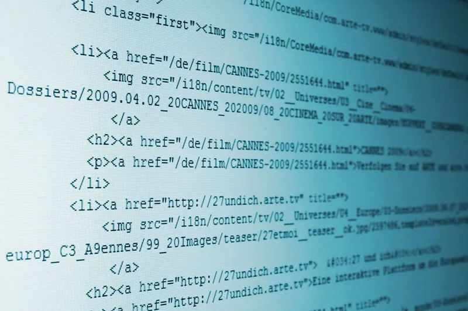

Sissejuhatus
Mis on HTML?
HTML ehk Hypertext Markup Language on standardne märgistuskeel veebilehtede ja veebirakenduste loomiseks. HTML-i kasutatakse veebilehel kuvatava sisu struktureerimiseks ja vormindamiseks ning seda saab kasutada piltide, videote ja muu multimeediumi lisamiseks. Lisaks saabHTML-i kasutada interaktiivsete vormide loomiseks ja sündmuste käitlejate lisamiseks, mis võimaldavad veebilehel reageerida kasutaja sisendile.Oma laia valikute võimalustega on HTML oluline tööriist kõigile, kes soovivad luua veebisaiti või veebirakendust. HTML5 lisab märgistuskeelele0palju uusi funktsioone, muutes selle võimsamaks ja paindlikumaks kui kunagi varem. Olenemata sellest, kas soovite luua lihtsat veebilehte või keerukat veebirakendust, on HTML alus, mida peate kasutama. Siiski on oluline märkida, et HTML ei ole programmeerimiskeel, see on lihtsaltmärgistuskeel, mida kasutatakse veebibrauseris kuvatava sisu struktureerimiseks. Keerulisemate funktsioonide jaoks kasutavad arendajad tavaliselt programmeerimiskeelt, näiteks JavaScripti.
Teooria
HTML tähendus.
HTML (ingliskeelne lühend sõnadest HyperText Markup Language 'hüperteksti märgistuskeel'[1][2]) on keel, milles märgendatakse veebilehti. Versioonid 2.0 kuni 4.01 HTML olid SGML-i rakendused. HTML-dokumentide (failide) veebist allalaadimiseks ja vaatamiseks kasutatakse enamasti veebibrauserit. Selline elektroonilise dokumendi märgendamise mõte on lahutada sisu, vaade jms objekti omadused üksteisest.

Kontaktandmed
darja.hramtsova@voco.ee
Tartu kesklinn
Darja Hramtsova